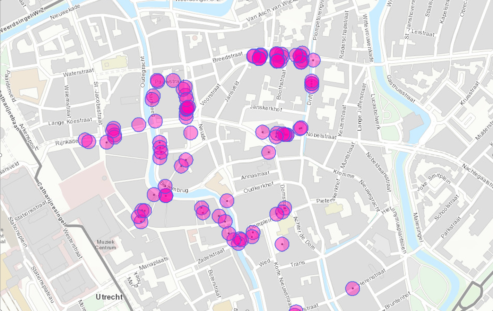

Vector Map
General info:
For this project, as opposed to others, I collected my own primary data. By using ArcGIS Pro I mapped out all the political propaganda stickers/posters that I came across in the city center. Afterwards, I processed that data to show an interesting discovery – that most messages were located very close to one another, some in a very concentrated way. This was done using a buffer of 20 meters around the location found. The intersections of the circles is a stark sign of high proximity between points.
Buffer Zones
Hot Spots
This map showcases both the hotpots of political propaganda messages, marked by the blue dots which increase in size with density, and the concentration of students in an area (the more intense yellow, the more). The hotspot was used for 2 reasons: to emphasize the regions most popular for stickers & posters, and to try visualize a pattern in order to get an idea of where more stickers/posters could be found. This data was overlapped with a student density map in order to assess whether correlation is possible. It seems like the most dense propaganda points also lie in areas populated by a lot lot students, however this is a limited observation as not enough data was collected to get a good enough impression.
Skilles acquired
The most important skill I developed through this project was collecting primary data through ArcGIS Pro. Furthermore, I also learned how to use different tools to process the data to make predictions, find patterns, or notice correlations.